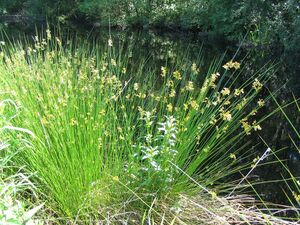
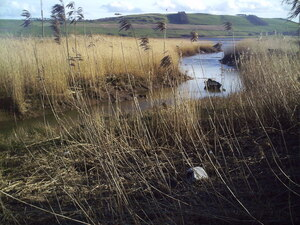

ⲕⲁⲙ SB, ? ϭⲉⲙ Sa (Ep 334), ⲕⲏⲙ Sf (Miss 4 782 sic MS, Mor 31 103) nn m, reed, rush (v Löw 166): MG 17 318 S = ib 92 B θροῖον = ib 412 حلفا, Miss 4 530 S = C 89 49 B sim, P 44 83 θρύον, ξυλεφες (? ξυλήφιον) حلفا, 43 60 غاسول, K 138 B حلفا used by ropemaker, ShP 1316 37 S ⲡⲕ. ⲛⲛⲟⲩϩ formerly sufficed monks for mat, BM 343 2 S we go ⲉϥⲓ ⲕ. ⲉⲧⲁⲗⲟ ⲧⲙⲏ, BKU 1 8 35 S ⲧⲙⲏ ⲛⲕ., Z 307 S ⲡⲣⲏϣ ⲛⲕ. ψίαθος, MG 25 239 B ⲗⲁⲥ ⲛⲕ. splinter of reed, P 1321 16 S ⲗⲁⲥ ⲛⲕ. darning needle, var Mor 31 209 ϫⲱϫ ⲛⲕⲏⲙ; MG 17 328 S ⲕⲁⲡ ⲛⲕ. λῶμα; AM 102 B as hafts for spikes; AZ 52 120 S ⲕ. moistened for mat (ⲥⲱ) making = Va ar 172 15 (MG 17 362 inf diff), C 89 10 B ϩⲱⲣⲡ ⲛ[ϩⲁⲛ]ⲕ.; reaping rushes: ShC 73 54, 159 S, C 89 22 B; C 43 226 B martyr's bodies thrown into ⲛⲓⲕ. (cf Synax 1 144 6), Mor 50 6 S bones hidden in ⲛⲉⲣⲱⲧ ⲛⲕ., MG 25 238 B asp lies there, BM 1073 S land cleared of ⲕ. (cf Waszinski Bodenpacht 69). J (penes Crum) S John ⲡϣⲗ(ⲕ) ⲕ., reed-weaver. ⲛⲟⲩⲛⲉ ⲛⲕ. S nn f, lit root of reed, a plant: P 44 83 μελεντήριον اصل الحلفا = 43 60 سمار (juncus). But ? l μελαν- & connect with ⲕⲁⲙⲉ black. In place-names (?) Πκαμ, Πιαϩ καμ & κημ (PLond 4), Πανκαμ (PCai 67138).
(noun male)
species
reed, rush [θροιον]


1: reed, rush
complete
| ⲛⲟⲩⲛⲉ ⲛⲕ. S | (noun female)lit root of reed, a plant [μελεντηριον]497 | Crum: 108a | |||||||
108a
815b
815b
ϭⲉⲙ Sa v ⲕⲁⲙ.
See also:
| view | ⲥⲏⲃⲉ, ⲥⲏϥⲉ S ⲥⲏⲃⲓ, ⲥⲉⲃⲓ B ⲥⲏϥⲓ F ⲥⲃ- S | (noun female) reed [καλαμος]
greave [κνημις] shin-bone kohl bottle1374 |
| view | ⲕⲁϣ SB ⲕⲉϣ AF ⲕⲉϣ- B | (noun male/female) reed [καλαμος, καλαμη]
― as stalk ― as pen ― as shin-bone ― as staff to lean on ― as plough-pole ― as stem (of candelabra) ― as paling as adj891 |
| view | ⲁϩⲣ, ⲁϩⲣⲉ S ⲁϧⲓ, ⲁⲭⲓ B | (noun male) marsh herbage, sedge [αχει]548 |
| view | ⲟⲉⲓⲕ S | (noun male) reed1238 |
| view | ⲥⲱ S | (noun) soaked reed, mat of reeds1370 |